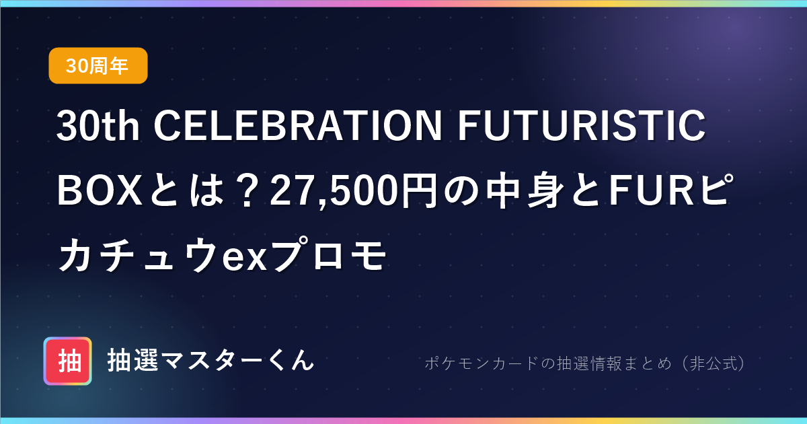

30th CELEBRATION FUTURISTIC BOXとは？27,500円の中身とFURピカチュウexプロモ

この商品の抽選・予約情報開始前 1件この記事の要点
- 2026年9月16日発売、参考価格27,500円（税込）の30周年記念セット
- 新レアリティFUR仕様のピカチュウexプロモが2枚入る
- サプライのデザインは、グラフィックアーティストのYOSHIROTTEN氏
- 販売はポケモンセンターオンラインが中心。12月頃に追加抽選の予定
FUTURISTIC BOXの中身
「30th CELEBRATION FUTURISTIC BOX」は、30周年の拡張パック「30th CELEBRATION」と同じ2026年9月16日に発売された記念セットです。主な中身は次のとおりと報じられています。
- FUR仕様のピカチュウexのプロモーションカード2枚
- YOSHIROTTEN氏がデザインしたサプライ（デッキシールドなど）
「FUR」は30th CELEBRATIONで初登場した新しいレアリティで、未来的なデザインが特徴です。ピカチュウexのFUR版は、このBOXでしか手に入らない特別なカードとして注目されています。
公式動画で見る
動画は公式YouTubeチャンネルの埋め込み機能で表示しています。
27,500円は高い？どんな人向け？
カードはプロモ2枚が中心で、残りはサプライです。そのため、「パックをたくさん開けたい人」より「30周年の記念品として持っておきたい人」向けの商品といえます。
フリマアプリでは定価を大きく超える価格で出品されることがあります。高額な商品ほど、偽物や中身の抜き取りといったトラブルも心配です。できるだけ正規の販売店で買いましょう。
買い方：ポケモンセンターオンラインの追加抽選を狙う
FUTURISTIC BOXの販売はポケモンセンターオンラインが中心で、ほかの店舗での取り扱いは限られています。ポケモンセンターオンラインは、FUTURISTIC BOXを含む30周年商品の追加抽選を12月頃に行うと案内しています。
応募には事前の準備（ポケモンセンターオンラインへの登録や本人確認）が必要です。詳しくは追加抽選の準備の記事をご覧ください。
出典
- トレカマップ「ポケカ30周年パック 30thセレブレーション」
- ゲームペディア「30th CELEBRATION FUTURISTIC BOX」
- ポケモンセンターオンライン お知らせ（追加抽選の予定）
当サイトは非公式のファンサイトです。価格・日程などは記事公開時点の情報なので、最新の情報は公式サイトや各販売店でご確認ください。